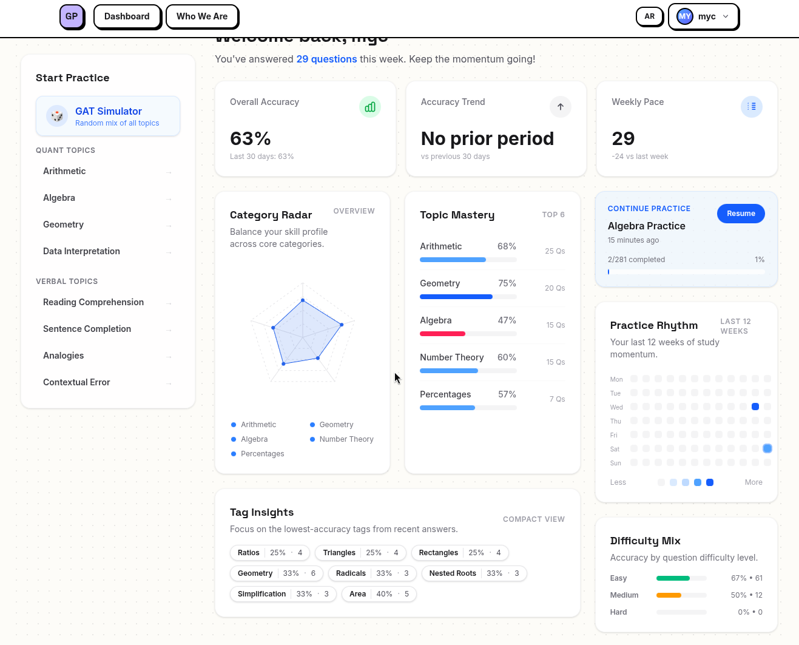

GATPrep

GATPrep is an EdTech startup I co-founded to build a digital question bank for standardized test preparation. The goal of the product is to make studying more accessible, organized, and efficient for students preparing for the GAT/Qudrat exam. The platform focuses on multiple-choice math questions and is designed to help users practice through a structured test bank rather than relying only on hard-copy materials or scattered resources. Since the product required both educational content and technical infrastructure, it gave me experience working across product design, software development, data management, and team coordination.
This artifact is important because it represents my experience building something from the ground up with a real team and a real user need. As a co-founder and technical lead, I had to think beyond just writing code. I worked on designing the product, planning how users would interact with it, deciding how questions should be stored and managed, and creating systems that allowed non-technical team members to contribute. This taught me how to turn an idea into an actual product by breaking down a large goal into smaller technical and organizational steps.
GATPrep, I learned how important leadership and communication are in product development. I worked with teammates who had different strengths, including technical development, business planning, and subject-matter expertise. Because of that, I had to explain technical decisions clearly, listen to feedback, and design workflows that made sense for the whole team rather than only for developers. Building the startup helped me understand that successful products depend on collaboration, planning, and usability as much as they depend on code.